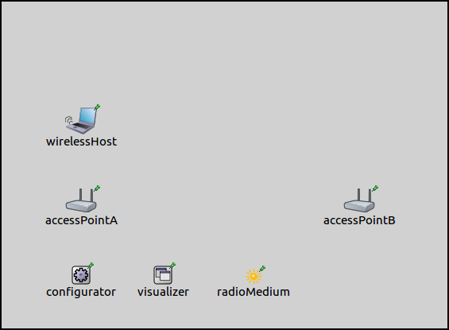
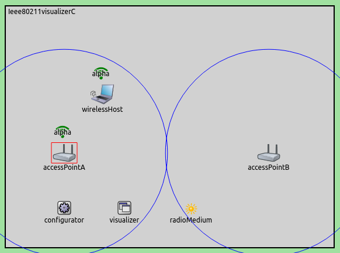
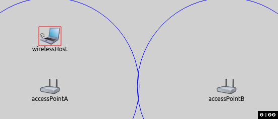

So why is this good? Because of convenience, like the others. You have to drill down in the inspector windows to find the information. The information of which nodes are connected to which access points. Which access points create which wifi networks. What is the ssid. If two APs have the same ssid, are the colored the same or differently ? They are colored the same. They also give information about the signal strength. Nothing can do that i think. Maybe the propagation visualizer. But. This is good because it gives some information in infrastructure mode only. Because there is no association in adhoc mode.
This example demonstrates the visualization of the association states and signal strengths in 802.11 infrastructure mode wireless networks. Visualizing these gives an overview about an access point's associated nodes and wireless signal quality. It is very conventient to get this information just by looking at the network, without needing to dig deep in the inspector windows of various nodes.
The Ieee80211Visualizer displays a wifi network symbol above network nodes when they are associated with a wireless network. This icon indicates the SSID of the network the given node is connected to. The icons for networks with different SSID's are colored differently. The icon is also displayed above nodes that create the networks, e.g. access points. The icon also indicates the signal strength present at the location of a given node. TODO: how is it indicated? and how does it work?
The visualizer's nodeFilter parameter selects which nodes' association states are visualized. The interfaceFilter parameter selects which interfaces are considered in the visualization. By default, all interfaces of all nodes are considered.
This configuration demonstrates the visualization with the default visualizer settings. It uses this simple network:

It contains a WirelessHost and an AccessPoint. Additionally, there is an IPv4NetworkConfigurator, an Ieee80211Visualizer and a Ieee80211ScalarRadioMedium module. TODO: replace Integrated with Ieee80211Visualizer update: doesnt work
The visualization is activated with the visualizer's displayAssociations parameter:
When the simulation is run, and the host has been associated with the access point, the network looks like this:

The wifi icon is placed above the host and the access point. The default SSID of the access point is left on default, which is 'SSID'. This is displayed with both icons.
There are 2 wireless networks, with different colors. The icon indicates signal strength. The node close to access point alpha has the strongest signal, the node farther away from access point alpha has the second strongest. The wall reduces the strength of the signal from access point bravo. It depends on distance as well. So, A1 has 4 bars, A2 3 bars, B1 2 bars, B2 one bar. Or something like that.
This configuration examines how a handover happens while the association state is visualized. The handover is demonstrated using the following network:
There are two AccessPoints. A WirelessHost moves horizontally back and forth, going out of the range of one access point and into the range of another. When that happens, it gets associated with the other access point, i.e. gets "handed over". There are also an IPv4NetworkConfigurator, an Ieee80211ScalarRadioMedium, and an IntegratedVisualizer module. The access points are configured to create wireless networks with different SSIDs, these are alpha and bravo for accessPointA and accessPointB, respectively.
When the simulation is run and the host has been associated to and access point, the network looks like this:
The communication ranges of the access points are visualized as blue circles. The following animation illustrates the handover:
TODO: something about...the icon changes to reflect the new association and i guess thats it. some kind of conclusion...further information...just like with the routingtablevisualizer